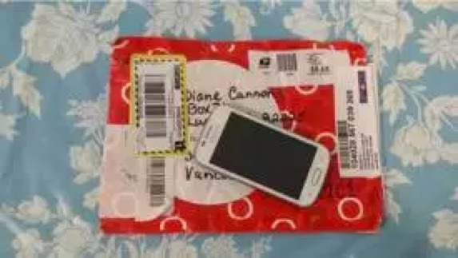
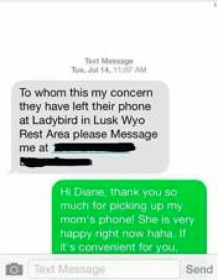

当我们谈出国旅游的经历时，我们会谈什么呢？辛勤练习但仍然蹩脚的外语？偶然尝到从此念念不忘的美食？旅途结识的热情又有趣的朋友？
奥古斯狄尼斯有言曰：
所以你在出国旅游时都读到过哪些有意思的内容呢？
扇贝论坛的特别策划“晒一晒你出国旅游遇到的趣事／囧事”收到了近三百条回复，有好玩的，有尴尬的，也有温暖的、感人的，还有折腾的、甚至危险的，大家国外旅游的经历真是好丰富呢，扇贝君选取了部分和大家分享。
机智的扇贝er
▌扇贝用户Ericaaaaa☁
去年去泰国玩儿……在pp岛浮潜的时候朋友脚被海胆刺伤了，他在宾馆休息我去买药，我就跟司机说我朋友被一种something in the ocean ！black！刺了，当时没想到刺怎么说，就不停指手背说jiu jiu jiu and oh！pain！ auh！司机居然听懂了……哈哈? 不管怎么说泰国特别是清迈真的很舒服，适合居住散心，今年还想去。
● 所谓词汇量不够，演技来凑ㄟ( ▔, ▔ )ㄏ
▌扇贝用户兔子在杭州
去泰国，那边蚊子多。但是驱蚊液这种生活用词完全不知道。然后，我对着店员说，我要买一样东西，那个东西跟这个有关。然后我就在那边手舞足蹈的，en…en…en…（蚊子飞行的声音），然后手就在那模拟蚊子飞到手上然后我一巴掌拍死的场景。说了两遍，店员当然明白了！他很聪明的跟我说蚊香的位置。然后我又在那边再操作几遍，他们才终于知道我要驱蚊液。
另外，我能说我买晕车药是模拟呕吐，然后店员都惊呆无语了吗？
晕车药他们没有体会出来（估计演技太差），回住的地方表演，前台给我写的 一_一|，我觉得，我差的不是英语，是演技~(′エ`)
● 隔行如隔山，演员不好当吧？
▌扇贝用户鳳鳳.Li
去泰国，因为当时英语不好，但是会的韩国语又用不上。跟商贩讲价时，都是拿着计算器先问how much然后让商贩按到计算器上，我第一句是no.no.no然后按上我的价格，最后小黑加50珠，他来句。you happy，we happy然后我们就愉快的成交了哈哈哈。
● 论一个计算器的多功能使用。
▌扇贝用户Three Cara
出门永远只点一个菜 this one。
● 机智，不知这位扇贝er现在能多点两个菜没呢，比如，that one？
温暖人心的故事
▌扇贝用户maylee
话说，去年夏天全家美国西部游，来到一个鸟不拉屎，鸡不生蛋的地儿。本人一个不留神，就将心爱的手机落在荒郊野外的一个公共厕所里了。大家七嘴八舌地各种说啊，办法各种想啊，情况的各种假设啊......说得我心里真是拔凉拔凉的......
“妈，有人发来信息说，捡到一个手机！” 女儿大叫道。 OMG！真让人不敢相信，难道雷锋同志也到美国旅游来了？！ 这位好心的女士捡到我的手机，（我的手机没有加密，直接划开即可），可能看到我和女儿的联系最多，（我们每天N个短信，即使每天见面），估摸着我们的亲密关系，就给女儿的手机发了如下信息：那位在怀俄明州卢克斯休息区掉了手机的女士，请给我发信息，我的联系方式是...... 接着，她又发来一条信息：不用谢，你们就开心的享受接下来的旅程吧！我会尽快将手机寄到你提供的地址的！ 我这个感动啊！......此处省略1000字...... 后来，手机几经辗转，终于物归我手。 完美的旅程，完美的故事，完美的结局！ 感恩！


▌扇贝用户叮鐺o一是一
在加拿大呆了快七年了，好多故事都挺有意思想分享下~
记得第一天去学校orentation (相当于报道)，前晚刚到加拿大，啥都不懂。去学校的时候是房东开车送的我，回家不知道怎么走了。advisor(类似指导员)把我带到公交车站，拿着地址挨个的帮我问司机，后来有个司机让我上车，告诉我怎么坐车，说今天是我的lucky day，免费送了我张车票。那会并不知道车票是在两小时内通用，转乘不花钱，结果需要倒车，下车后发现身上没零钱，所以剩下的路决定拿着地图走回去……
顺着车开的方向一路走，从天亮走到天黑，也没手机，也不觉得害怕，还一路照相，照了100多张照片-。-其间路过一个地铁站，上面写着大大的ETS，ETS是托福考试中心的缩写，还以为到了考试中心分部（其实是Edmonton Transit System的缩写）。天黑了我坐在车站的长凳休息，有个遛狗的老爷爷，走过去又特意走回来，问我需要帮忙不，我说我要去这里，他说不太远，送我到附近的路口，然后一路聊天，带着他那只大哈士奇，走了大概半小时，到底还是把我送回了小区，然后我给他电话号，他给房东打了电话，房东出来把我领回去了。一直记得那个老爷爷，总想圣诞给他寄明信片感谢他，但是当时并没有留他电话和住址。好人一生平安。
● 好人一生平安～
囧人囧事
▌扇贝用户川林天下
看见有人说去泰国被人妖挑逗，我这个是跑去看人妖秀，节目完了游客都拉着人妖拍照，结果有一个外国大叔问我：could I take a photo with you?我还稀里糊涂的说了Yes……大叔就高高兴兴搂着我照了一张照片…然后我反应过来他把我当了人妖……再反应过来他连小费都没有给！
● 道理我都懂，可是照片呢？真的不要向大家展示阁下的绝世容颜？
▌扇贝用户Glede
陪爸妈去澳大利亚，看鸵鸟的时候发现了一只生了四个蛋的鸟妈妈。她不小心把一只蛋蹬到身后去了，于是我们就看着她呆萌地歪着头数：一只蛋，两只蛋，三只蛋，三只蛋……咦好像哪里不对？再数一遍。一只蛋，两只蛋，三只蛋，怎么还是三只？我还有一个孩子呢？？呢？？我麻麻在旁边拼命喊后面后面！！然而并没有什么用，回来之后我妈说应该用英文喊的，可能是中文她听不懂……
● 蠢萌的鸵鸟妈妈，哈哈哈！
▌扇贝用户Jason24
澳村悉尼留学僧。刚到的时候每次听土澳村民讲"It is a good day to die"就觉得好惊恐。你想象下一个人笑眯眯地跟你说“今天适合去死”是什么样的体验...
后来才知道别人讲的是"It's a good day today."
● 听力不够好是一种怎样的体验？
▌扇贝用户猫猫
说一个我在泰国的吧，在芭提雅有那种拖伞嘛，我玩完下来的时候，一个泰国小伙问我：where are you from？当时太激动，根本没听那个小伙在说什么，我以为是问我好不好玩，我就随口回了个yes！结果我就看见小伙震惊的表情……后来他还学我说话，自己在那where are you from，yes的说……
还有一个，也是去泰国的时候，是我朋友，坐得亚航的飞机，在飞机上点餐，然后空姐没有找零，我朋友就跟空姐说change？然后空姐给了他一个了然的表情，回去拿了杯橙汁来～哈哈哈哈～
还有还有一个，我一个朋友出国回来跟我说他在国外喝橙汁都要喝吐了，问其因，他说，因为他只会说orange juice～
● 看来空姐还有点中文基础呢。
▌扇贝用户祖国的小花儿_
我们在去匈牙利玩的时候，查到有一家猪排店很有名，于是我们就很早打电话预约，他说只能8点，我们问能不能再早点，他们说不行，我们就说好吧，后来我们想6点过去碰碰运气，他们说没位子，问我们预约了吗，我们说预约了，然后看我的名字是LI，就说好的LI，7点半或者8点再来，然后我们在外面溜达到7点半准时到了，他们看到我们就笑说，好准时，hungry 李来了…… - -！！！！被外国人嘲笑了……郁闷。
● 丢出去的脸，吃回来啊！
▌扇贝用户ppddai
刚出国那会认识的一个中国同学。上课老师叫她honey，结果她特别认真地跟老师说no， I‘m not honey， I’m Jennifer 现在想起来还会笑。
● 老师内心OS：调皮的中国学生 =_=
▌扇贝用户Barbarian
在印度，本地人都随地小便，有一天我尿急，就随便找了个墙角尿，结果尿完发现一大群人已经站在身后，模样凶狠，好像要打我。
没啥好说的，扭头就跑，还好大家都是拖鞋，没我快，奔上车就锁门，让司机快开车，结果司机是个二货，不停的why why why，我只好躲在后排车座椅下（路虎）。
一大群人跑来，问司机有没有看到一个人（本地土语听不懂），然后又和司机唠嗑了很久，司机给他们指了个方向，然后一大群人朝哪个方向走了,事后司机告诉我，我尿在他们神龛上了，肯定会被打死的，要我感谢他。
然后我默默的掏出了5000RS，感激的放在了他的手上...在后来的几个月里，每次只要是他接我下班，我就给他200~300RS.
● 所以出国了最好了解点儿当地的民俗啊，不仅可以获得更好的游玩体验，也是为了安全～
![]()